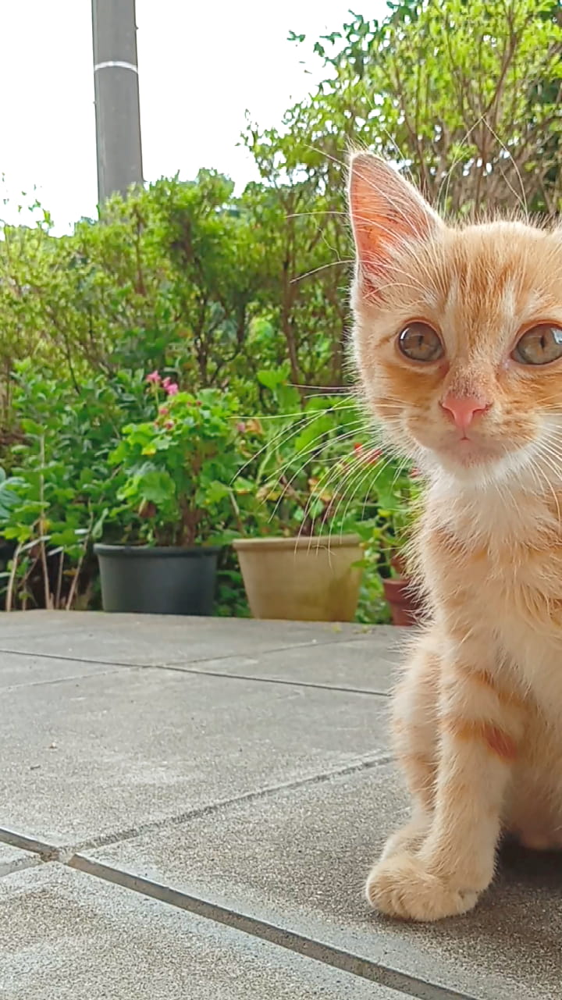

ラム(茶トラ白)Rum(Red Tabby Mix)
好奇心旺盛、元気で活発な女の子。
温かみのあるオレンジ色の縞模様がチャームポイント。
親しみやすさと愛嬌で、みんなを笑顔にしてくれるアイドルです。
| 性格 | 甘えん坊、陽気、人懐っこい、好奇心旺盛、食いしん坊(笑) |
|---|---|
| 毛種 | 短毛種 |
| 毛質 | 柔らかく、密度の高い日本猫らしい毛並み |
| 毛色 | ジンジャー（明るい茶色）、ホワイト |
| 模様 | マッカレルタビー（魚の骨のような美しい縞模様） |
| 体型 | フォーリン（スマートで引き締まった体型） |
| チャームポイント | クリクリの大きな瞳と、おでこの見事なM字マーク |